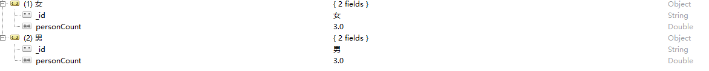
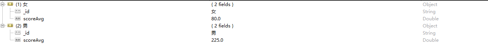
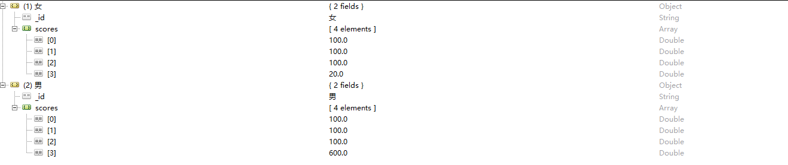
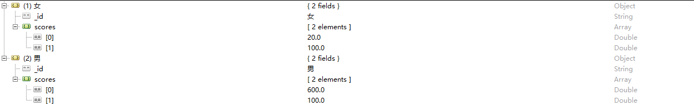
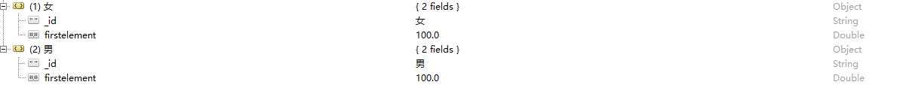
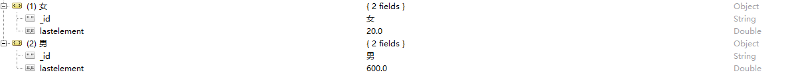
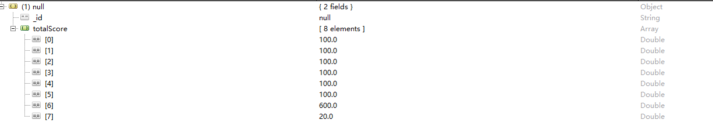

mongodb聚合
MongoDB中聚合(aggregate)主要用于处理数据(诸如统计平均值,求和等)，并返回计算后的数据结果。有点类似sql语句中的 count(*)。
基本语法为：db.collection.aggregate( [ <stage1>, <stage2>, … ] )
我们在数据库中插入一下文档：
1 | db.collection.save({"name":"s","sex":"男","age":1,"score":100}) |
执行下面的语句1
db.collection.aggregate([{"$group":{"_id":"$sex","personCount":{"$sum":1}}}])
对性别sex进行分组并统计他们的数量

由于上面的数据看效果不是太明显 我们在插入两条数据1
2db.collection.save({"name":"p","sex":"男","age":1,"score":600})
db.collection.save({"name":"u","sex":"女","age":1,"score":20})
对性别进行分组然后对score进行求平均值 $avg1
dv.collection.aggregate(["$group":{"_id":"$sex","scoreAvg":{"$avg":"$score"}}}])

对性别进行分组然后求最大值 $max1
db.collection.aggregate(["$group":{"_id":"$sex","scoreMax":{"$max":"$score"}}])
对性别进行分组然后取最小值 $min1
db.collection.aggregate(["$group":{"_id":"$sex","scoreMin":{"$min":"$score"}}])
对性别进行分组然后将score放进一个数组scores $push1
db.collection.aggregate(["$group":{"_id":"$sex","scores":{"$push":"$score"}}])

对性别进行分组然后将score放进一个数组scores去掉重复的元素 $addToSet1
db.collection.aggregate(["$group":{"_id":"$sex","scores":{"$addToSet":"$score"}}])

根据资源文档的排序获取第一个元素 $first1
db.collection.aggregate(["$group":{"_id":"$sex","firstelement":{"$first":"$score"}}])

根据资源文档的排序获取最后一个元素 $last1
db.collection.aggregate(["$group":{"_id":"$sex","lastelement":{"$last":"$score"}}])

全部统计不进行分组1
db.collection.aggregate(["$group":{"_id":"null","totalScore":{"$push":"$score"}}])
